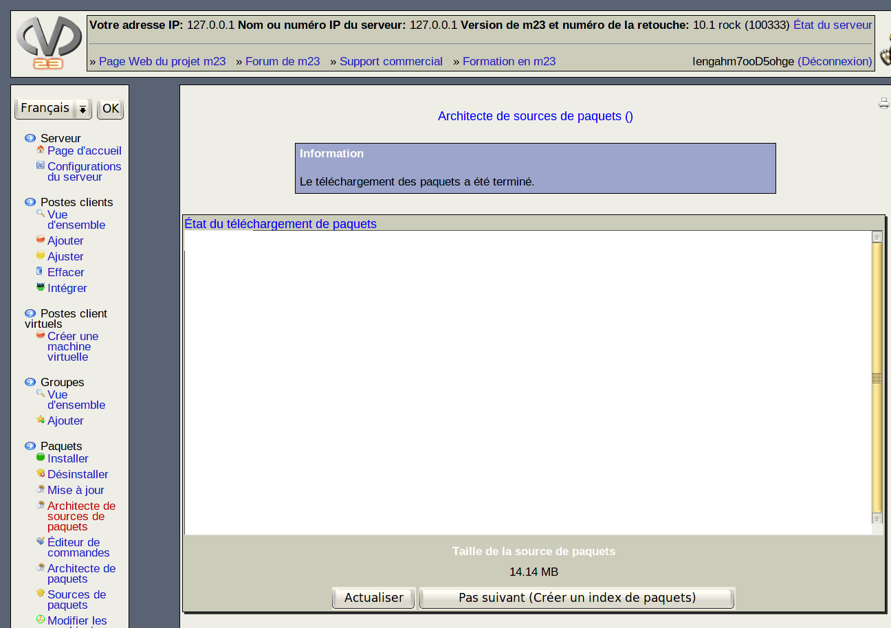

Cette fenêtre affiche l'état actuel du téléchargement. Cliquez sur Actualiser de temps en temps afin de mettre à jour les informations sur l'état du téléchargement. Vous verrez dans la fenêtre d'information si le téléchargement progresse ou s'il est terminé. Après la finalisation du téléchargement, vous devez créer un fichier index. Ceci est possible en cliquant sur Étape suivante (Créer un index de paquets) (cette fonction est seulement disponible après la finalisation du téléchargement).
root
2019-06-03